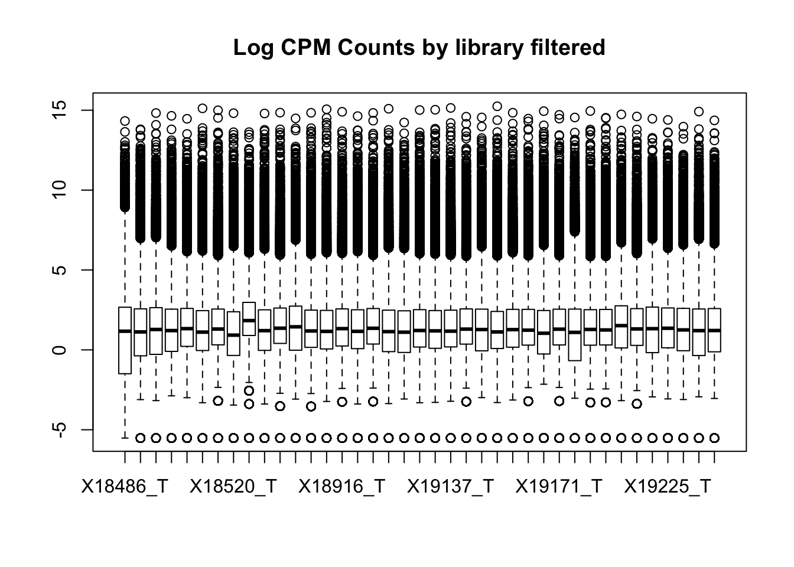
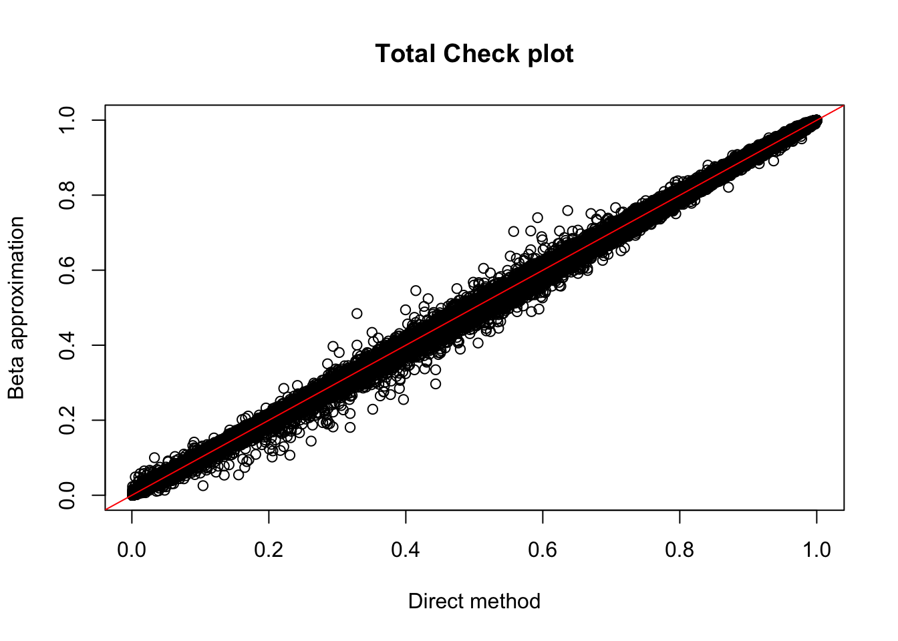

Modify Leafcutter and Chose Extra Filter Cuttoff
Briana Mittleman
11/26/2018
Last updated: 2019-02-15
Checks: 6 0
Knit directory: threeprimeseq/analysis/
This reproducible R Markdown analysis was created with workflowr (version 1.2.0). The Report tab describes the reproducibility checks that were applied when the results were created. The Past versions tab lists the development history.
Great! Since the R Markdown file has been committed to the Git repository, you know the exact version of the code that produced these results.
Great job! The global environment was empty. Objects defined in the global environment can affect the analysis in your R Markdown file in unknown ways. For reproduciblity it’s best to always run the code in an empty environment.
The command set.seed(12345) was run prior to running the code in the R Markdown file. Setting a seed ensures that any results that rely on randomness, e.g. subsampling or permutations, are reproducible.
Great job! Recording the operating system, R version, and package versions is critical for reproducibility.
Nice! There were no cached chunks for this analysis, so you can be confident that you successfully produced the results during this run.
Great! You are using Git for version control. Tracking code development and connecting the code version to the results is critical for reproducibility. The version displayed above was the version of the Git repository at the time these results were generated.
Note that you need to be careful to ensure that all relevant files for the analysis have been committed to Git prior to generating the results (you can use wflow_publish or wflow_git_commit). workflowr only checks the R Markdown file, but you know if there are other scripts or data files that it depends on. Below is the status of the Git repository when the results were generated:
Ignored files:
Ignored: .DS_Store
Ignored: .Rhistory
Ignored: .Rproj.user/
Ignored: data/.DS_Store
Ignored: data/perm_QTL_trans_noMP_5percov/
Ignored: output/.DS_Store
Untracked files:
Untracked: KalistoAbundance18486.txt
Untracked: analysis/4suDataIGV.Rmd
Untracked: analysis/DirectionapaQTL.Rmd
Untracked: analysis/EvaleQTLs.Rmd
Untracked: analysis/YL_QTL_test.Rmd
Untracked: analysis/ncbiRefSeq_sm.sort.mRNA.bed
Untracked: analysis/snake.config.notes.Rmd
Untracked: analysis/verifyBAM.Rmd
Untracked: analysis/verifybam_dubs.Rmd
Untracked: code/PeaksToCoverPerReads.py
Untracked: code/strober_pc_pve_heatmap_func.R
Untracked: data/18486.genecov.txt
Untracked: data/APApeaksYL.total.inbrain.bed
Untracked: data/ApaQTLs/
Untracked: data/ChromHmmOverlap/
Untracked: data/DistTXN2Peak_genelocAnno/
Untracked: data/GM12878.chromHMM.bed
Untracked: data/GM12878.chromHMM.txt
Untracked: data/LianoglouLCL/
Untracked: data/LocusZoom/
Untracked: data/NuclearApaQTLs.txt
Untracked: data/PeakCounts/
Untracked: data/PeakCounts_noMP_5perc/
Untracked: data/PeakCounts_noMP_genelocanno/
Untracked: data/PeakUsage/
Untracked: data/PeakUsage_noMP/
Untracked: data/PeakUsage_noMP_GeneLocAnno/
Untracked: data/PeaksUsed/
Untracked: data/PeaksUsed_noMP_5percCov/
Untracked: data/RNAkalisto/
Untracked: data/RefSeq_annotations/
Untracked: data/TotalApaQTLs.txt
Untracked: data/Totalpeaks_filtered_clean.bed
Untracked: data/UnderstandPeaksQC/
Untracked: data/WASP_STAT/
Untracked: data/YL-SP-18486-T-combined-genecov.txt
Untracked: data/YL-SP-18486-T_S9_R1_001-genecov.txt
Untracked: data/YL_QTL_test/
Untracked: data/apaExamp/
Untracked: data/apaQTL_examp_noMP/
Untracked: data/bedgraph_peaks/
Untracked: data/bin200.5.T.nuccov.bed
Untracked: data/bin200.Anuccov.bed
Untracked: data/bin200.nuccov.bed
Untracked: data/clean_peaks/
Untracked: data/comb_map_stats.csv
Untracked: data/comb_map_stats.xlsx
Untracked: data/comb_map_stats_39ind.csv
Untracked: data/combined_reads_mapped_three_prime_seq.csv
Untracked: data/diff_iso_GeneLocAnno/
Untracked: data/diff_iso_proc/
Untracked: data/diff_iso_trans/
Untracked: data/ensemble_to_genename.txt
Untracked: data/example_gene_peakQuant/
Untracked: data/explainProtVar/
Untracked: data/filtPeakOppstrand_cov_noMP_GeneLocAnno_5perc/
Untracked: data/filtered_APApeaks_merged_allchrom_refseqTrans.closest2End.bed
Untracked: data/filtered_APApeaks_merged_allchrom_refseqTrans.closest2End.noties.bed
Untracked: data/first50lines_closest.txt
Untracked: data/gencov.test.csv
Untracked: data/gencov.test.txt
Untracked: data/gencov_zero.test.csv
Untracked: data/gencov_zero.test.txt
Untracked: data/gene_cov/
Untracked: data/joined
Untracked: data/leafcutter/
Untracked: data/merged_combined_YL-SP-threeprimeseq.bg
Untracked: data/molPheno_noMP/
Untracked: data/mol_overlap/
Untracked: data/mol_pheno/
Untracked: data/nom_QTL/
Untracked: data/nom_QTL_opp/
Untracked: data/nom_QTL_trans/
Untracked: data/nuc6up/
Untracked: data/nuc_10up/
Untracked: data/other_qtls/
Untracked: data/pQTL_otherphen/
Untracked: data/peakPerRefSeqGene/
Untracked: data/perm_QTL/
Untracked: data/perm_QTL_GeneLocAnno_noMP_5percov/
Untracked: data/perm_QTL_GeneLocAnno_noMP_5percov_3UTR/
Untracked: data/perm_QTL_opp/
Untracked: data/perm_QTL_trans/
Untracked: data/perm_QTL_trans_filt/
Untracked: data/protAndAPAAndExplmRes.Rda
Untracked: data/protAndAPAlmRes.Rda
Untracked: data/protAndExpressionlmRes.Rda
Untracked: data/reads_mapped_three_prime_seq.csv
Untracked: data/smash.cov.results.bed
Untracked: data/smash.cov.results.csv
Untracked: data/smash.cov.results.txt
Untracked: data/smash_testregion/
Untracked: data/ssFC200.cov.bed
Untracked: data/temp.file1
Untracked: data/temp.file2
Untracked: data/temp.gencov.test.txt
Untracked: data/temp.gencov_zero.test.txt
Untracked: data/threePrimeSeqMetaData.csv
Untracked: data/threePrimeSeqMetaData55Ind.txt
Untracked: data/threePrimeSeqMetaData55Ind.xlsx
Untracked: data/threePrimeSeqMetaData55Ind_noDup.txt
Untracked: data/threePrimeSeqMetaData55Ind_noDup.xlsx
Untracked: data/threePrimeSeqMetaData55Ind_noDup_WASPMAP.txt
Untracked: data/threePrimeSeqMetaData55Ind_noDup_WASPMAP.xlsx
Untracked: output/picard/
Untracked: output/plots/
Untracked: output/qual.fig2.pdf
Unstaged changes:
Modified: analysis/28ind.peak.explore.Rmd
Modified: analysis/CompareLianoglouData.Rmd
Modified: analysis/NewPeakPostMP.Rmd
Modified: analysis/apaQTLoverlapGWAS.Rmd
Modified: analysis/cleanupdtseq.internalpriming.Rmd
Modified: analysis/coloc_apaQTLs_protQTLs.Rmd
Modified: analysis/dif.iso.usage.leafcutter.Rmd
Modified: analysis/diff_iso_pipeline.Rmd
Modified: analysis/explainpQTLs.Rmd
Modified: analysis/explore.filters.Rmd
Modified: analysis/flash2mash.Rmd
Modified: analysis/mispriming_approach.Rmd
Modified: analysis/overlapMolQTL.Rmd
Modified: analysis/overlapMolQTL.opposite.Rmd
Modified: analysis/overlap_qtls.Rmd
Modified: analysis/peakOverlap_oppstrand.Rmd
Modified: analysis/peakQCPPlots.Rmd
Modified: analysis/pheno.leaf.comb.Rmd
Modified: analysis/pipeline_55Ind.Rmd
Modified: analysis/swarmPlots_QTLs.Rmd
Modified: analysis/test.max2.Rmd
Modified: analysis/test.smash.Rmd
Modified: analysis/understandPeaks.Rmd
Modified: code/Snakefile
Note that any generated files, e.g. HTML, png, CSS, etc., are not included in this status report because it is ok for generated content to have uncommitted changes.
These are the previous versions of the R Markdown and HTML files. If you’ve configured a remote Git repository (see ?wflow_git_remote), click on the hyperlinks in the table below to view them.
| File | Version | Author | Date | Message |
|---|---|---|---|---|
| html | b9cce4b | Briana Mittleman | 2018-12-05 | Build site. |
| Rmd | e230640 | Briana Mittleman | 2018-12-05 | add code to save relevant figures |
| html | 210b58b | Briana Mittleman | 2018-11-29 | Build site. |
| Rmd | 413c8fd | Briana Mittleman | 2018-11-29 | add filter QTL analysis and start explain pqtl |
I want to use this analysis to understand how many genes are not included in the apaQTL analysis due to low coverage and how many are not included due to low variance between individuals. I can do this by modifying the leafcutter prepare_phenotype_table.py to include output this information.
This will take 2 arguments, the ratio file and the outfile with the information for missing info ##Modify Scripts MissingandNoVarGenes.py
#!/usr/bin/env python
import sys
import gzip
import numpy as np
import scipy as sc
import pickle
from optparse import OptionParser
from sklearn.decomposition import PCA
from sklearn import preprocessing
from sklearn import linear_model
from scipy.stats import rankdata
from scipy.stats import norm
def qqnorm(x):
n=len(x)
a=3.0/8.0 if n<=10 else 0.5
return(norm.ppf( (rankdata(x)-a)/(n+1.0-2.0*a) ))
def stream_table(f, ss = ''):
fc = '#'
while fc[0] == "#":
fc = f.readline().strip()
head = fc.split(ss)
for ln in f:
ln = ln.strip().split(ss)
attr = {}
for i in range(len(head)):
try: attr[head[i]] = ln[i]
except: break
yield attr
def main(ratio_file,out_File, pcs=50):
outF=open(out_File, "w")
n_Missing=0
n_lowVar=0
dic_pop, fout = {}, {}
try: open(ratio_file)
except:
sys.stderr.write("Can't find %s..exiting\n"%(ratio_file))
return
sys.stderr.write("Starting...\n")
for i in range(1,23):
fout[i] = file(ratio_file+".phen_chr%d"%i,'w')
fout_ave = file(ratio_file+".ave",'w')
valRows, valRowsnn, geneRows = [], [], []
finished = False
header = gzip.open(ratio_file).readline().split()[1:]
for i in fout:
fout[i].write("\t".join(["#Chr","start", "end", "ID"]+header)+'\n')
for dic in stream_table(gzip.open(ratio_file),' '):
chrom = dic['chrom'].replace("chr",'')
chr_ = chrom.split(":")[0]
if chr_ in 'XY': continue
NA_indices, valRow, aveReads = [], [], []
tmpvalRow = []
i = 0
for sample in header:
try: count = dic[sample]
except: print chrom, len(dic)
num, denom = count.split('/')
if float(denom) < 1:
count = "NA"
tmpvalRow.append("NA")
NA_indices.append(i)
else:
# add a 0.5 pseudocount
count = (float(num)+0.5)/((float(denom))+0.5)
tmpvalRow.append(count)
aveReads.append(count)
# If ratio is missing for over 40% of the samples, skip
if tmpvalRow.count("NA") > len(tmpvalRow)*0.4:
#this is missing data (i want to write this row to skipped genes)
n_Missing += 1
continue
ave = np.mean(aveReads)
# Set missing values as the mean of all values
for c in tmpvalRow:
if c == "NA": valRow.append(ave)
else: valRow.append(c)
# If there is too little variation, skip (there is a bug in fastqtl which doesn't handle cases with no variation)
if np.std(valRow) < 0.005:
#this is little variation (i want to write this row to little variation genes)
n_lowVar +=1
continue
outF.write("MissingData:%d: NoVariation:%d"%(n_Missing,n_lowVar))
outF.close()
if __name__ == "__main__":
parser = OptionParser(usage="usage: %prog [-p num_PCs] input_perind.counts.gz")
parser.add_option("-p", "--pcs", dest="npcs", default = 50, help="number of PCs output")
(options, args) = parser.parse_args()
if len(args)==0:
sys.stderr.write("Error: no ratio file provided... (e.g. python leafcutter/scripts/prepare_phenotype_table.py input_perind.counts.gz\n")
exit(0)
main(args[0], args[1], int(options.npcs))Try this in /project2/gilad/briana/threeprimeseq/data/PASstats
module load python
python /project2/gilad/briana/threeprimeseq/code/MissingandNoVarGenes.py /project2/gilad/briana/threeprimeseq/data/phenotypes_filtPeakTranscript/filtered_APApeaks_merged_allchrom_refseqGenes.Transcript_sm_quant.Nuclear.pheno_fixed.txt.gz /project2/gilad/briana/threeprimeseq/data/PASstats/Nuclear_missing_and_noVar.txt
python /project2/gilad/briana/threeprimeseq/code/MissingandNoVarGenes.py /project2/gilad/briana/threeprimeseq/data/phenotypes_filtPeakTranscript/filtered_APApeaks_merged_allchrom_refseqGenes.Transcript_sm_quant.Total.pheno_fixed.txt.gz /project2/gilad/briana/threeprimeseq/data/PASstats/Total_missing_and_noVar.txt
total (338142): MissingData:1692: NoVariation:112641
Nuclear (338142):
MissingData:472: NoVariation:134521
This is 33% in total and 40% in nuclear with low variation.
It may be interesting to look at how many peaks have counts <5 in at least 40% of the individuals. This could tell me if we need to be filtering more.
LowExpPeaks.py
Input the ratio matrix and a file to output the number of NAs due to low expression. I am looking at the number of peaks with <5 reads in at least 40% of the individuals.
#!/usr/bin/env python
import sys
import gzip
import numpy as np
import scipy as sc
import pickle
from optparse import OptionParser
from sklearn.decomposition import PCA
from sklearn import preprocessing
from sklearn import linear_model
from scipy.stats import rankdata
from scipy.stats import norm
def qqnorm(x):
n=len(x)
a=3.0/8.0 if n<=10 else 0.5
return(norm.ppf( (rankdata(x)-a)/(n+1.0-2.0*a) ))
def stream_table(f, ss = ''):
fc = '#'
while fc[0] == "#":
fc = f.readline().strip()
head = fc.split(ss)
for ln in f:
ln = ln.strip().split(ss)
attr = {}
for i in range(len(head)):
try: attr[head[i]] = ln[i]
except: break
yield attr
def main(ratio_file,out_File, pcs=50):
outF=open(out_File, "w")
n_Missing=0
n_lowVar=0
dic_pop, fout = {}, {}
try: open(ratio_file)
except:
sys.stderr.write("Can't find %s..exiting\n"%(ratio_file))
return
sys.stderr.write("Starting...\n")
for i in range(1,23):
fout[i] = file(ratio_file+".phen_chr%d"%i,'w')
fout_ave = file(ratio_file+".ave",'w')
valRows, valRowsnn, geneRows = [], [], []
finished = False
header = gzip.open(ratio_file).readline().split()[1:]
for i in fout:
fout[i].write("\t".join(["#Chr","start", "end", "ID"]+header)+'\n')
for dic in stream_table(gzip.open(ratio_file),' '):
chrom = dic['chrom'].replace("chr",'')
chr_ = chrom.split(":")[0]
if chr_ in 'XY': continue
NA_indices, valRow, aveReads = [], [], []
tmpvalRow = []
i = 0
for sample in header:
try: count = dic[sample]
except: print chrom, len(dic)
num, denom = count.split('/')
if float(denom) < 1:
count = "NA"
tmpvalRow.append("NA")
NA_indices.append(i)
#add condition to make the count NA if the numerator is less than 5
if float(num) < 5:
count = "NA"
tmpvalRow.append("NA")
NA_indices.append(i)
else:
# add a 0.5 pseudocount
count = (float(num)+0.5)/((float(denom))+0.5)
tmpvalRow.append(count)
aveReads.append(count)
# If ratio is missing for over 40% of the samples, skip
if tmpvalRow.count("NA") > len(tmpvalRow)*0.4:
#this is missing data (i want to write this row to skipped genes)
n_Missing += 1
continue
ave = np.mean(aveReads)
# Set missing values as the mean of all values
for c in tmpvalRow:
if c == "NA": valRow.append(ave)
else: valRow.append(c)
# If there is too little variation, skip (there is a bug in fastqtl which doesn't handle cases with no variation)
if np.std(valRow) < 0.005:
#this is little variation (i want to write this row to little variation genes)
n_lowVar +=1
continue
outF.write("TooLow:%d\n"%(n_Missing))
outF.close()
if __name__ == "__main__":
parser = OptionParser(usage="usage: %prog [-p num_PCs] input_perind.counts.gz")
parser.add_option("-p", "--pcs", dest="npcs", default = 50, help="number of PCs output")
(options, args) = parser.parse_args()
if len(args)==0:
sys.stderr.write("Error: no ratio file provided... (e.g. python leafcutter/scripts/prepare_phenotype_table.py input_perind.counts.gz\n")
exit(0)
main(args[0], args[1], int(options.npcs))module load python
python /project2/gilad/briana/threeprimeseq/code/LowExpPeaks.py /project2/gilad/briana/threeprimeseq/data/phenotypes_filtPeakTranscript/filtered_APApeaks_merged_allchrom_refseqGenes.Transcript_sm_quant.Nuclear.pheno_fixed.txt.gz /project2/gilad/briana/threeprimeseq/data/PASstats/Nuclear_LowExp.txt
python /project2/gilad/briana/threeprimeseq/code/LowExpPeaks.py /project2/gilad/briana/threeprimeseq/data/phenotypes_filtPeakTranscript/filtered_APApeaks_merged_allchrom_refseqGenes.Transcript_sm_quant.Total.pheno_fixed.txt.gz /project2/gilad/briana/threeprimeseq/data/PASstats/Total_LowExp.txt
Total: 258090/338142 Nuclear: 185530/338142
Plot results
library(workflowr)This is workflowr version 1.2.0
Run ?workflowr for help getting startedlibrary(edgeR)Loading required package: limmalibrary(tidyverse)── Attaching packages ───────────────────────────────────────────────────────────── tidyverse 1.2.1 ──✔ ggplot2 3.0.0 ✔ purrr 0.2.5
✔ tibble 1.4.2 ✔ dplyr 0.7.6
✔ tidyr 0.8.1 ✔ stringr 1.4.0
✔ readr 1.1.1 ✔ forcats 0.3.0Warning: package 'stringr' was built under R version 3.5.2── Conflicts ──────────────────────────────────────────────────────────────── tidyverse_conflicts() ──
✖ dplyr::filter() masks stats::filter()
✖ dplyr::lag() masks stats::lag()library(reshape2)
Attaching package: 'reshape2'The following object is masked from 'package:tidyr':
smithsfraction=c("Total", "Nuclear")
NoVariation=c(0.33,0.40)
LowExpression=c(0.76,0.55)
PASstats=data.frame(fraction, NoVariation, LowExpression)
PASstats_melt=melt(PASstats)Using fraction as id variablesplot thid
prefilter_pas_stat=ggplot(PASstats_melt, aes(x=variable, y=value,fill=fraction))+ geom_bar(stat="identity",position="dodge") + labs(y="Proportion of PAS", title="PAS with low variation or low expression", x="Category") + scale_fill_manual(values=c("deepskyblue3","darkviolet"))
prefilter_pas_stat
| Version | Author | Date |
|---|---|---|
| 210b58b | Briana Mittleman | 2018-11-29 |
ggsave("../output/plots/QC_plots/prefilter_PASstats.png", prefilter_pas_stat)Saving 7 x 5 in imageDo this de novo
CPM
It may be better to look at mean distribution of reads per peak to look for a cuttoff. I can take counts matrix
/project2/gilad/briana/threeprimeseq/data/filtPeakOppstrand_cov/filtered_APApeaks_merged_allchrom_refseqGenes.Transcript_sm_quant.Nuclear_fixed.fc
/project2/gilad/briana/threeprimeseq/data/filtPeakOppstrand_cov/filtered_APApeaks_merged_allchrom_refseqGenes.Transcript_sm_quant.Total_fixed.fc
It would be good to do this in CPM and look at the densities like you do for RNA seq. In order to do this. I need a vector with the peak lengths.
total:
Load data and convert to CPM with peak length.
totalPeakCov=read.table("../data/PeakCounts/filtered_APApeaks_merged_allchrom_refseqGenes.Transcript_sm_quant.Total_fixed.fc", header = T, stringsAsFactors = F)
peakLength=totalPeakCov[,6]
totalPeakCov_cpm= cpm(as.matrix(totalPeakCov[,7:ncol(totalPeakCov)]),log=T, gene.length=peakLength)Plot prefiltered density
plotDensities(totalPeakCov_cpm, legend = "bottomright", main="Pre-filtering")
abline(v = -1, lty = 3)
| Version | Author | Date |
|---|---|---|
| 210b58b | Briana Mittleman | 2018-11-29 |
Looks like filtering around -1 works. I can keep peaks with greater than -1 cpm in 2/3 of the samples (26)
keep.exprs_T=rowSums(totalPeakCov_cpm>-1) >= 26
totalPeakCov_cpm_filt= totalPeakCov_cpm[keep.exprs_T,]
plotDensities(totalPeakCov_cpm_filt, legend = "bottomright", main="Post-filtering")
| Version | Author | Date |
|---|---|---|
| 210b58b | Briana Mittleman | 2018-11-29 |
I can assess this with boxplots. It is interesting to see how different these data are from the RNA seq.
boxplot(totalPeakCov_cpm, main="Log CPM Counts by library prefilter")
| Version | Author | Date |
|---|---|---|
| 210b58b | Briana Mittleman | 2018-11-29 |
boxplot(totalPeakCov_cpm_filt, main="Log CPM Counts by library filtered")
| Version | Author | Date |
|---|---|---|
| 210b58b | Briana Mittleman | 2018-11-29 |
Nuclear
Load data and convert to CPM with peak length.
nuclearPeakCov=read.table("../data/PeakCounts/filtered_APApeaks_merged_allchrom_refseqGenes.Transcript_sm_quant.Nuclear_fixed.fc", header = T, stringsAsFactors = F)
peakLengthN=nuclearPeakCov[,6]
nuclearPeakCov_cpm= cpm(as.matrix(nuclearPeakCov[,7:ncol(nuclearPeakCov)]),log=T, gene.length=peakLengthN)Plot prefiltered density
plotDensities(nuclearPeakCov_cpm, legend = "bottomright", main="Pre-filtering")
abline(v = 0, lty = 3)
| Version | Author | Date |
|---|---|---|
| 210b58b | Briana Mittleman | 2018-11-29 |
Looks like filtering around -4.5 works. I can keep peaks with greater than -4.5 cpm in 2/3 of the samples (26)
keep.exprs_N=rowSums(nuclearPeakCov_cpm>-4.5) >= 26
nuclearPeakCov_cpm_filt= nuclearPeakCov_cpm[keep.exprs_T,]
plotDensities(nuclearPeakCov_cpm_filt, legend = "bottomright", main="Post-filtering")
| Version | Author | Date |
|---|---|---|
| 210b58b | Briana Mittleman | 2018-11-29 |
boxplot(nuclearPeakCov_cpm, main="Log CPM Counts by library prefilter")
| Version | Author | Date |
|---|---|---|
| 210b58b | Briana Mittleman | 2018-11-29 |
boxplot(nuclearPeakCov_cpm_filt, main="Log CPM Counts by library filtered")
| Version | Author | Date |
|---|---|---|
| 210b58b | Briana Mittleman | 2018-11-29 |
I had to filter stronger in the total fraction to get similar boxplot distributions. I can compare this method to using raw counts rather than CPM.
With this scheme I have the following number of peaks remaining:
Total: 66,782 Nuclear: 124,196
Raw counts
Total
png("../output/plots/QC_plots/log10TotalPeakCov_prefilter.png")
totalPeakCov_logM=log10(as.matrix(totalPeakCov[,7:ncol(totalPeakCov)]))
plotDensities(totalPeakCov_logM, legend = "bottomright", main="Raw Pre-filtering")
abline(v = .55, lty = 3)
dev.off()quartz_off_screen
2 I can filter 2/3 (26) individuals at .55.
keep.exprs_T_raw=rowSums(totalPeakCov_logM>.55) >= 26
totalPeakCov_raw_filt= totalPeakCov_logM[keep.exprs_T_raw,]
png("../output/plots/QC_plots/log10TotalPeakCov_postfilter.png")
plotDensities(totalPeakCov_raw_filt, legend = "bottomright", main="Post-filtering")
dev.off()quartz_off_screen
2 boxplot(totalPeakCov_logM, main="log Counts by library prefilter")Warning in bplt(at[i], wid = width[i], stats = z$stats[, i], out =
z$out[z$group == : Outlier (-Inf) in boxplot 9 is not drawn
| Version | Author | Date |
|---|---|---|
| 210b58b | Briana Mittleman | 2018-11-29 |
boxplot(totalPeakCov_raw_filt, main="Log Counts by library filtered")Warning in bplt(at[i], wid = width[i], stats = z$stats[, i], out =
z$out[z$group == : Outlier (-Inf) in boxplot 2 is not drawnWarning in bplt(at[i], wid = width[i], stats = z$stats[, i], out =
z$out[z$group == : Outlier (-Inf) in boxplot 3 is not drawnWarning in bplt(at[i], wid = width[i], stats = z$stats[, i], out =
z$out[z$group == : Outlier (-Inf) in boxplot 4 is not drawnWarning in bplt(at[i], wid = width[i], stats = z$stats[, i], out =
z$out[z$group == : Outlier (-Inf) in boxplot 5 is not drawnWarning in bplt(at[i], wid = width[i], stats = z$stats[, i], out =
z$out[z$group == : Outlier (-Inf) in boxplot 6 is not drawnWarning in bplt(at[i], wid = width[i], stats = z$stats[, i], out =
z$out[z$group == : Outlier (-Inf) in boxplot 7 is not drawnWarning in bplt(at[i], wid = width[i], stats = z$stats[, i], out =
z$out[z$group == : Outlier (-Inf) in boxplot 8 is not drawnWarning in bplt(at[i], wid = width[i], stats = z$stats[, i], out =
z$out[z$group == : Outlier (-Inf) in boxplot 9 is not drawnWarning in bplt(at[i], wid = width[i], stats = z$stats[, i], out =
z$out[z$group == : Outlier (-Inf) in boxplot 10 is not drawnWarning in bplt(at[i], wid = width[i], stats = z$stats[, i], out =
z$out[z$group == : Outlier (-Inf) in boxplot 11 is not drawnWarning in bplt(at[i], wid = width[i], stats = z$stats[, i], out =
z$out[z$group == : Outlier (-Inf) in boxplot 12 is not drawnWarning in bplt(at[i], wid = width[i], stats = z$stats[, i], out =
z$out[z$group == : Outlier (-Inf) in boxplot 13 is not drawnWarning in bplt(at[i], wid = width[i], stats = z$stats[, i], out =
z$out[z$group == : Outlier (-Inf) in boxplot 14 is not drawnWarning in bplt(at[i], wid = width[i], stats = z$stats[, i], out =
z$out[z$group == : Outlier (-Inf) in boxplot 15 is not drawnWarning in bplt(at[i], wid = width[i], stats = z$stats[, i], out =
z$out[z$group == : Outlier (-Inf) in boxplot 16 is not drawnWarning in bplt(at[i], wid = width[i], stats = z$stats[, i], out =
z$out[z$group == : Outlier (-Inf) in boxplot 17 is not drawnWarning in bplt(at[i], wid = width[i], stats = z$stats[, i], out =
z$out[z$group == : Outlier (-Inf) in boxplot 18 is not drawnWarning in bplt(at[i], wid = width[i], stats = z$stats[, i], out =
z$out[z$group == : Outlier (-Inf) in boxplot 19 is not drawnWarning in bplt(at[i], wid = width[i], stats = z$stats[, i], out =
z$out[z$group == : Outlier (-Inf) in boxplot 20 is not drawnWarning in bplt(at[i], wid = width[i], stats = z$stats[, i], out =
z$out[z$group == : Outlier (-Inf) in boxplot 21 is not drawnWarning in bplt(at[i], wid = width[i], stats = z$stats[, i], out =
z$out[z$group == : Outlier (-Inf) in boxplot 22 is not drawnWarning in bplt(at[i], wid = width[i], stats = z$stats[, i], out =
z$out[z$group == : Outlier (-Inf) in boxplot 23 is not drawnWarning in bplt(at[i], wid = width[i], stats = z$stats[, i], out =
z$out[z$group == : Outlier (-Inf) in boxplot 24 is not drawnWarning in bplt(at[i], wid = width[i], stats = z$stats[, i], out =
z$out[z$group == : Outlier (-Inf) in boxplot 25 is not drawnWarning in bplt(at[i], wid = width[i], stats = z$stats[, i], out =
z$out[z$group == : Outlier (-Inf) in boxplot 26 is not drawnWarning in bplt(at[i], wid = width[i], stats = z$stats[, i], out =
z$out[z$group == : Outlier (-Inf) in boxplot 27 is not drawnWarning in bplt(at[i], wid = width[i], stats = z$stats[, i], out =
z$out[z$group == : Outlier (-Inf) in boxplot 28 is not drawnWarning in bplt(at[i], wid = width[i], stats = z$stats[, i], out =
z$out[z$group == : Outlier (-Inf) in boxplot 29 is not drawnWarning in bplt(at[i], wid = width[i], stats = z$stats[, i], out =
z$out[z$group == : Outlier (-Inf) in boxplot 30 is not drawnWarning in bplt(at[i], wid = width[i], stats = z$stats[, i], out =
z$out[z$group == : Outlier (-Inf) in boxplot 31 is not drawnWarning in bplt(at[i], wid = width[i], stats = z$stats[, i], out =
z$out[z$group == : Outlier (-Inf) in boxplot 32 is not drawnWarning in bplt(at[i], wid = width[i], stats = z$stats[, i], out =
z$out[z$group == : Outlier (-Inf) in boxplot 33 is not drawnWarning in bplt(at[i], wid = width[i], stats = z$stats[, i], out =
z$out[z$group == : Outlier (-Inf) in boxplot 34 is not drawnWarning in bplt(at[i], wid = width[i], stats = z$stats[, i], out =
z$out[z$group == : Outlier (-Inf) in boxplot 35 is not drawnWarning in bplt(at[i], wid = width[i], stats = z$stats[, i], out =
z$out[z$group == : Outlier (-Inf) in boxplot 36 is not drawnWarning in bplt(at[i], wid = width[i], stats = z$stats[, i], out =
z$out[z$group == : Outlier (-Inf) in boxplot 37 is not drawnWarning in bplt(at[i], wid = width[i], stats = z$stats[, i], out =
z$out[z$group == : Outlier (-Inf) in boxplot 38 is not drawnWarning in bplt(at[i], wid = width[i], stats = z$stats[, i], out =
z$out[z$group == : Outlier (-Inf) in boxplot 39 is not drawn
| Version | Author | Date |
|---|---|---|
| 210b58b | Briana Mittleman | 2018-11-29 |
This leaves 80554 rows.
Nuclear
png("../output/plots/QC_plots/log10NuclearPeakCov_prefilter.png")
nuclearPeakCov_logM=log10(as.matrix(nuclearPeakCov[,7:ncol(nuclearPeakCov)]))
plotDensities(nuclearPeakCov_logM, legend = "bottomright", main="Raw Pre-filtering")
abline(v = .55, lty = 3)
dev.off()quartz_off_screen
2 I can filter 2/3 (26) individuals at .55.
keep.exprs_N_raw=rowSums(nuclearPeakCov_logM>.55) >= 26
nuclearPeakCov_raw_filt= nuclearPeakCov_logM[keep.exprs_N_raw,]
png("../output/plots/QC_plots/log10NuclearPeakCov_postfilter.png")
plotDensities(nuclearPeakCov_raw_filt, legend = "bottomright", main="Post-filtering")
dev.off()quartz_off_screen
2 boxplot(nuclearPeakCov_logM, main="log Counts by library prefilter")Warning in bplt(at[i], wid = width[i], stats = z$stats[, i], out =
z$out[z$group == : Outlier (-Inf) in boxplot 2 is not drawnWarning in bplt(at[i], wid = width[i], stats = z$stats[, i], out =
z$out[z$group == : Outlier (-Inf) in boxplot 4 is not drawnWarning in bplt(at[i], wid = width[i], stats = z$stats[, i], out =
z$out[z$group == : Outlier (-Inf) in boxplot 5 is not drawnWarning in bplt(at[i], wid = width[i], stats = z$stats[, i], out =
z$out[z$group == : Outlier (-Inf) in boxplot 6 is not drawnWarning in bplt(at[i], wid = width[i], stats = z$stats[, i], out =
z$out[z$group == : Outlier (-Inf) in boxplot 7 is not drawnWarning in bplt(at[i], wid = width[i], stats = z$stats[, i], out =
z$out[z$group == : Outlier (-Inf) in boxplot 8 is not drawnWarning in bplt(at[i], wid = width[i], stats = z$stats[, i], out =
z$out[z$group == : Outlier (-Inf) in boxplot 9 is not drawnWarning in bplt(at[i], wid = width[i], stats = z$stats[, i], out =
z$out[z$group == : Outlier (-Inf) in boxplot 10 is not drawnWarning in bplt(at[i], wid = width[i], stats = z$stats[, i], out =
z$out[z$group == : Outlier (-Inf) in boxplot 11 is not drawnWarning in bplt(at[i], wid = width[i], stats = z$stats[, i], out =
z$out[z$group == : Outlier (-Inf) in boxplot 12 is not drawnWarning in bplt(at[i], wid = width[i], stats = z$stats[, i], out =
z$out[z$group == : Outlier (-Inf) in boxplot 14 is not drawnWarning in bplt(at[i], wid = width[i], stats = z$stats[, i], out =
z$out[z$group == : Outlier (-Inf) in boxplot 15 is not drawnWarning in bplt(at[i], wid = width[i], stats = z$stats[, i], out =
z$out[z$group == : Outlier (-Inf) in boxplot 16 is not drawnWarning in bplt(at[i], wid = width[i], stats = z$stats[, i], out =
z$out[z$group == : Outlier (-Inf) in boxplot 17 is not drawnWarning in bplt(at[i], wid = width[i], stats = z$stats[, i], out =
z$out[z$group == : Outlier (-Inf) in boxplot 18 is not drawnWarning in bplt(at[i], wid = width[i], stats = z$stats[, i], out =
z$out[z$group == : Outlier (-Inf) in boxplot 19 is not drawnWarning in bplt(at[i], wid = width[i], stats = z$stats[, i], out =
z$out[z$group == : Outlier (-Inf) in boxplot 20 is not drawnWarning in bplt(at[i], wid = width[i], stats = z$stats[, i], out =
z$out[z$group == : Outlier (-Inf) in boxplot 21 is not drawnWarning in bplt(at[i], wid = width[i], stats = z$stats[, i], out =
z$out[z$group == : Outlier (-Inf) in boxplot 22 is not drawnWarning in bplt(at[i], wid = width[i], stats = z$stats[, i], out =
z$out[z$group == : Outlier (-Inf) in boxplot 23 is not drawnWarning in bplt(at[i], wid = width[i], stats = z$stats[, i], out =
z$out[z$group == : Outlier (-Inf) in boxplot 24 is not drawnWarning in bplt(at[i], wid = width[i], stats = z$stats[, i], out =
z$out[z$group == : Outlier (-Inf) in boxplot 25 is not drawnWarning in bplt(at[i], wid = width[i], stats = z$stats[, i], out =
z$out[z$group == : Outlier (-Inf) in boxplot 26 is not drawnWarning in bplt(at[i], wid = width[i], stats = z$stats[, i], out =
z$out[z$group == : Outlier (-Inf) in boxplot 27 is not drawnWarning in bplt(at[i], wid = width[i], stats = z$stats[, i], out =
z$out[z$group == : Outlier (-Inf) in boxplot 28 is not drawnWarning in bplt(at[i], wid = width[i], stats = z$stats[, i], out =
z$out[z$group == : Outlier (-Inf) in boxplot 29 is not drawnWarning in bplt(at[i], wid = width[i], stats = z$stats[, i], out =
z$out[z$group == : Outlier (-Inf) in boxplot 31 is not drawnWarning in bplt(at[i], wid = width[i], stats = z$stats[, i], out =
z$out[z$group == : Outlier (-Inf) in boxplot 32 is not drawnWarning in bplt(at[i], wid = width[i], stats = z$stats[, i], out =
z$out[z$group == : Outlier (-Inf) in boxplot 33 is not drawnWarning in bplt(at[i], wid = width[i], stats = z$stats[, i], out =
z$out[z$group == : Outlier (-Inf) in boxplot 34 is not drawnWarning in bplt(at[i], wid = width[i], stats = z$stats[, i], out =
z$out[z$group == : Outlier (-Inf) in boxplot 35 is not drawnWarning in bplt(at[i], wid = width[i], stats = z$stats[, i], out =
z$out[z$group == : Outlier (-Inf) in boxplot 37 is not drawnWarning in bplt(at[i], wid = width[i], stats = z$stats[, i], out =
z$out[z$group == : Outlier (-Inf) in boxplot 38 is not drawn
| Version | Author | Date |
|---|---|---|
| 210b58b | Briana Mittleman | 2018-11-29 |
boxplot(nuclearPeakCov_raw_filt, main="Log Counts by library filtered")Warning in bplt(at[i], wid = width[i], stats = z$stats[, i], out =
z$out[z$group == : Outlier (-Inf) in boxplot 1 is not drawnWarning in bplt(at[i], wid = width[i], stats = z$stats[, i], out =
z$out[z$group == : Outlier (-Inf) in boxplot 2 is not drawnWarning in bplt(at[i], wid = width[i], stats = z$stats[, i], out =
z$out[z$group == : Outlier (-Inf) in boxplot 3 is not drawnWarning in bplt(at[i], wid = width[i], stats = z$stats[, i], out =
z$out[z$group == : Outlier (-Inf) in boxplot 4 is not drawnWarning in bplt(at[i], wid = width[i], stats = z$stats[, i], out =
z$out[z$group == : Outlier (-Inf) in boxplot 5 is not drawnWarning in bplt(at[i], wid = width[i], stats = z$stats[, i], out =
z$out[z$group == : Outlier (-Inf) in boxplot 6 is not drawnWarning in bplt(at[i], wid = width[i], stats = z$stats[, i], out =
z$out[z$group == : Outlier (-Inf) in boxplot 7 is not drawnWarning in bplt(at[i], wid = width[i], stats = z$stats[, i], out =
z$out[z$group == : Outlier (-Inf) in boxplot 8 is not drawnWarning in bplt(at[i], wid = width[i], stats = z$stats[, i], out =
z$out[z$group == : Outlier (-Inf) in boxplot 9 is not drawnWarning in bplt(at[i], wid = width[i], stats = z$stats[, i], out =
z$out[z$group == : Outlier (-Inf) in boxplot 10 is not drawnWarning in bplt(at[i], wid = width[i], stats = z$stats[, i], out =
z$out[z$group == : Outlier (-Inf) in boxplot 11 is not drawnWarning in bplt(at[i], wid = width[i], stats = z$stats[, i], out =
z$out[z$group == : Outlier (-Inf) in boxplot 12 is not drawnWarning in bplt(at[i], wid = width[i], stats = z$stats[, i], out =
z$out[z$group == : Outlier (-Inf) in boxplot 13 is not drawnWarning in bplt(at[i], wid = width[i], stats = z$stats[, i], out =
z$out[z$group == : Outlier (-Inf) in boxplot 14 is not drawnWarning in bplt(at[i], wid = width[i], stats = z$stats[, i], out =
z$out[z$group == : Outlier (-Inf) in boxplot 15 is not drawnWarning in bplt(at[i], wid = width[i], stats = z$stats[, i], out =
z$out[z$group == : Outlier (-Inf) in boxplot 16 is not drawnWarning in bplt(at[i], wid = width[i], stats = z$stats[, i], out =
z$out[z$group == : Outlier (-Inf) in boxplot 17 is not drawnWarning in bplt(at[i], wid = width[i], stats = z$stats[, i], out =
z$out[z$group == : Outlier (-Inf) in boxplot 18 is not drawnWarning in bplt(at[i], wid = width[i], stats = z$stats[, i], out =
z$out[z$group == : Outlier (-Inf) in boxplot 19 is not drawnWarning in bplt(at[i], wid = width[i], stats = z$stats[, i], out =
z$out[z$group == : Outlier (-Inf) in boxplot 20 is not drawnWarning in bplt(at[i], wid = width[i], stats = z$stats[, i], out =
z$out[z$group == : Outlier (-Inf) in boxplot 21 is not drawnWarning in bplt(at[i], wid = width[i], stats = z$stats[, i], out =
z$out[z$group == : Outlier (-Inf) in boxplot 22 is not drawnWarning in bplt(at[i], wid = width[i], stats = z$stats[, i], out =
z$out[z$group == : Outlier (-Inf) in boxplot 23 is not drawnWarning in bplt(at[i], wid = width[i], stats = z$stats[, i], out =
z$out[z$group == : Outlier (-Inf) in boxplot 24 is not drawnWarning in bplt(at[i], wid = width[i], stats = z$stats[, i], out =
z$out[z$group == : Outlier (-Inf) in boxplot 25 is not drawnWarning in bplt(at[i], wid = width[i], stats = z$stats[, i], out =
z$out[z$group == : Outlier (-Inf) in boxplot 26 is not drawnWarning in bplt(at[i], wid = width[i], stats = z$stats[, i], out =
z$out[z$group == : Outlier (-Inf) in boxplot 27 is not drawnWarning in bplt(at[i], wid = width[i], stats = z$stats[, i], out =
z$out[z$group == : Outlier (-Inf) in boxplot 28 is not drawnWarning in bplt(at[i], wid = width[i], stats = z$stats[, i], out =
z$out[z$group == : Outlier (-Inf) in boxplot 29 is not drawnWarning in bplt(at[i], wid = width[i], stats = z$stats[, i], out =
z$out[z$group == : Outlier (-Inf) in boxplot 30 is not drawnWarning in bplt(at[i], wid = width[i], stats = z$stats[, i], out =
z$out[z$group == : Outlier (-Inf) in boxplot 31 is not drawnWarning in bplt(at[i], wid = width[i], stats = z$stats[, i], out =
z$out[z$group == : Outlier (-Inf) in boxplot 32 is not drawnWarning in bplt(at[i], wid = width[i], stats = z$stats[, i], out =
z$out[z$group == : Outlier (-Inf) in boxplot 33 is not drawnWarning in bplt(at[i], wid = width[i], stats = z$stats[, i], out =
z$out[z$group == : Outlier (-Inf) in boxplot 34 is not drawnWarning in bplt(at[i], wid = width[i], stats = z$stats[, i], out =
z$out[z$group == : Outlier (-Inf) in boxplot 35 is not drawnWarning in bplt(at[i], wid = width[i], stats = z$stats[, i], out =
z$out[z$group == : Outlier (-Inf) in boxplot 36 is not drawnWarning in bplt(at[i], wid = width[i], stats = z$stats[, i], out =
z$out[z$group == : Outlier (-Inf) in boxplot 37 is not drawnWarning in bplt(at[i], wid = width[i], stats = z$stats[, i], out =
z$out[z$group == : Outlier (-Inf) in boxplot 38 is not drawnWarning in bplt(at[i], wid = width[i], stats = z$stats[, i], out =
z$out[z$group == : Outlier (-Inf) in boxplot 39 is not drawn
| Version | Author | Date |
|---|---|---|
| 210b58b | Briana Mittleman | 2018-11-29 |
This leaves 159308 peaks with coverage.
Filter based on raw coverage
I am going to write a script to filter based on this cutoff so I can see if there is increased power to detect QTLs. I will need to change this when I add individuals.
extraFilterPeaks_39ind.R
#this script will filter the peaks based on peaks with coverage greater than log10(cov)==.55 in 2/3 of the individuals, I will have to fix headers after
#nonfilter dir: /project2/gilad/briana/threeprimeseq/data/filtPeakOppstrand_cov/
#filter dir: /project2/gilad/briana/threeprimeseq/data/ExtrafiltPeakOppstrand_cov/
#total
totalPeak=read.table("/project2/gilad/briana/threeprimeseq/data/filtPeakOppstrand_cov/filtered_APApeaks_merged_allchrom_refseqGenes.Transcript_sm_quant.Total_fixed.fc", stringsAsFactors = F, header=T)
totalPeakCov_logM=log10(as.matrix(totalPeak[,7:ncol(totalPeak)]))
keep.exprs_T_raw=rowSums(totalPeakCov_logM>.55) >= 26
totalPeakCov_raw_filt= totalPeak[keep.exprs_T_raw,]
write.table(totalPeakCov_raw_filt,file="/project2/gilad/briana/threeprimeseq/data/ExtrafiltPeakOppstrand_cov/Extrafiltered_APApeaks_merged_allchrom_refseqGenes.Transcript_sm_quant.Total_fixed.fc", quote=F, col.names = T ,row.names = F)
#nuclear
nuclearPeak=read.table("/project2/gilad/briana/threeprimeseq/data/filtPeakOppstrand_cov/filtered_APApeaks_merged_allchrom_refseqGenes.Transcript_sm_quant.Nuclear_fixed.fc", header = T)
nuclearPeakCov_logM=log10(as.matrix(nuclearPeak[,7:ncol(nuclearPeak)]))
keep.exprs_N_raw=rowSums(nuclearPeakCov_logM>.55) >= 26
nuclearPeakCov_raw_filt= nuclearPeak[keep.exprs_N_raw,]
write.table(nuclearPeakCov_raw_filt,file="/project2/gilad/briana/threeprimeseq/data/ExtrafiltPeakOppstrand_cov/Extrafiltered_APApeaks_merged_allchrom_refseqGenes.Transcript_sm_quant.Nuclear_fixed.fc", quote=F, col.names = T,row.names = F )I can use fileIDs /project2/gilad/briana/threeprimeseq/data/filtPeakOppstrand_cov/file_id_mapping_total_Transcript_head.txt and /project2/gilad/briana/threeprimeseq/data/filtPeakOppstrand_cov/file_id_mapping_nuclear_Transcript_head.txt
makePhenoRefSeqPeaks_Transcript_Total_extraFilt.py
#PYTHON 3
dic_IND = {}
dic_BAM = {}
for ln in open("/project2/gilad/briana/threeprimeseq/data/filtPeakOppstrand_cov/file_id_mapping_total_Transcript.txt"):
bam, IND = ln.split("\t")
IND = IND.strip()
dic_IND[bam] = IND
if IND not in dic_BAM:
dic_BAM[IND] = []
dic_BAM[IND].append(bam)
#now I have ind dic with keys as the bam and ind as the values
#I also have a bam dic with ind as the keys and bam as the values
inds=list(dic_BAM.keys()) #list of ind libraries
#gene start and end dictionaries:
dic_geneS = {}
dic_geneE = {}
for ln in open("/project2/gilad/briana/genome_anotation_data/ncbiRefSeq_endProtCodGenes_sort.txt"):
chrom, start, end, geneID, score, strand = ln.split('\t')
gene= geneID.split(":")[1]
if "-" in gene:
gene=gene.split("-")[0]
if gene not in dic_geneS:
dic_geneS[gene]=int(start)
dic_geneE[gene]=int(end)
#list of genes
count_file=open("/project2/gilad/briana/threeprimeseq/data/ExtrafiltPeakOppstrand_cov/Extrafiltered_APApeaks_merged_allchrom_refseqGenes.Transcript_sm_quant.Total_fixed.fc", "r")
genes=[]
for line , i in enumerate(count_file):
if line > 1:
i_list=i.split()
id=i_list[0]
id_list=id.split(":")
gene=id_list[5]
if gene not in genes:
genes.append(gene)
#make the ind and gene dic
dic_dub={}
for g in genes:
dic_dub[g]={}
for i in inds:
dic_dub[g][i]=0
#populate the dictionary
count_file=open("/project2/gilad/briana/threeprimeseq/data/ExtrafiltPeakOppstrand_cov/Extrafiltered_APApeaks_merged_allchrom_refseqGenes.Transcript_sm_quant.Total_fixed.fc", "r")
for line, i in enumerate(count_file):
if line > 1:
i_list=i.split()
id=i_list[0]
id_list=id.split(":")
g= id_list[5]
values=list(i_list[6:])
list_list=[]
for ind,val in zip(inds, values):
list_list.append([ind, val])
for num, name in enumerate(list_list):
dic_dub[g][list_list[num][0]] += int(list_list[num][1])
#write the file by acessing the dictionary and putting values in the table ver the value in the dic
fout=open("/project2/gilad/briana/threeprimeseq/data/ExtrafiltPeakOppstrand_cov/Extrafiltered_APApeaks_merged_allchrom_refseqGenes.Transcript_sm_quant.Total.pheno_fixed.txt","w")
peak=["chrom"]
inds_noL=[]
for each in inds:
indsNA= "NA" + each[:-2]
inds_noL.append(indsNA)
fout.write(" ".join(peak + inds_noL) + '\n' )
count_file=open("/project2/gilad/briana/threeprimeseq/data/ExtrafiltPeakOppstrand_cov/Extrafiltered_APApeaks_merged_allchrom_refseqGenes.Transcript_sm_quant.Total_fixed.fc", "r")
for line , i in enumerate(count_file):
if line > 1:
i_list=i.split()
id=i_list[0]
id_list=id.split(":")
gene=id_list[5]
start=dic_geneS[id_list[5]]
end=dic_geneE[id_list[5]]
buff=[]
buff.append("chr%s:%d:%d:%s_%s_%s"%(id_list[1], start, end, id_list[5], id_list[4], id_list[0]))
for x,y in zip(i_list[6:], inds):
b=int(dic_dub[gene][y])
t=int(x)
buff.append("%d/%d"%(t,b))
fout.write(" ".join(buff)+ '\n')
fout.close()makePhenoRefSeqPeaks_Transcript_Nuclear_extraFilt.py
#PYTHON 3
dic_IND = {}
dic_BAM = {}
for ln in open("/project2/gilad/briana/threeprimeseq/data/filtPeakOppstrand_cov/file_id_mapping_nuclear_Transcript.txt"):
bam, IND = ln.split("\t")
IND = IND.strip()
dic_IND[bam] = IND
if IND not in dic_BAM:
dic_BAM[IND] = []
dic_BAM[IND].append(bam)
#now I have ind dic with keys as the bam and ind as the values
#I also have a bam dic with ind as the keys and bam as the values
inds=list(dic_BAM.keys()) #list of ind libraries
#gene start and end dictionaries:
dic_geneS = {}
dic_geneE = {}
for ln in open("/project2/gilad/briana/genome_anotation_data/ncbiRefSeq_endProtCodGenes_sort.txt"):
chrom, start, end, geneID, score, strand = ln.split('\t')
gene= geneID.split(":")[1]
if "-" in gene:
gene=gene.split("-")[0]
if gene not in dic_geneS:
dic_geneS[gene]=int(start)
dic_geneE[gene]=int(end)
#list of genes
count_file=open("/project2/gilad/briana/threeprimeseq/data/ExtrafiltPeakOppstrand_cov/Extrafiltered_APApeaks_merged_allchrom_refseqGenes.Transcript_sm_quant.Nuclear_fixed.fc", "r")
genes=[]
for line , i in enumerate(count_file):
if line > 1:
i_list=i.split()
id=i_list[0]
id_list=id.split(":")
gene=id_list[5]
if gene not in genes:
genes.append(gene)
#make the ind and gene dic
dic_dub={}
for g in genes:
dic_dub[g]={}
for i in inds:
dic_dub[g][i]=0
#populate the dictionary
count_file=open("/project2/gilad/briana/threeprimeseq/data/ExtrafiltPeakOppstrand_cov/Extrafiltered_APApeaks_merged_allchrom_refseqGenes.Transcript_sm_quant.Nuclear_fixed.fc", "r")
for line, i in enumerate(count_file):
if line > 1:
i_list=i.split()
id=i_list[0]
id_list=id.split(":")
g= id_list[5]
values=list(i_list[6:])
list_list=[]
for ind,val in zip(inds, values):
list_list.append([ind, val])
for num, name in enumerate(list_list):
dic_dub[g][list_list[num][0]] += int(list_list[num][1])
#write the file by acessing the dictionary and putting values in the table ver the value in the dic
fout=open("/project2/gilad/briana/threeprimeseq/data/ExtrafiltPeakOppstrand_cov/Extrafiltered_APApeaks_merged_allchrom_refseqGenes.Transcript_sm_quant.Nuclear.pheno_fixed.txt","w")
peak=["chrom"]
inds_noL=[]
for each in inds:
indsNA= "NA" + each[:-2]
inds_noL.append(indsNA)
fout.write(" ".join(peak + inds_noL) + '\n' )
count_file=open("/project2/gilad/briana/threeprimeseq/data/ExtrafiltPeakOppstrand_cov/Extrafiltered_APApeaks_merged_allchrom_refseqGenes.Transcript_sm_quant.Nuclear_fixed.fc", "r")
for line , i in enumerate(count_file):
if line > 1:
i_list=i.split()
id=i_list[0]
id_list=id.split(":")
gene=id_list[5]
start=dic_geneS[id_list[5]]
end=dic_geneE[id_list[5]]
buff=[]
buff.append("chr%s:%d:%d:%s_%s_%s"%(id_list[1], start, end, id_list[5], id_list[4], id_list[0]))
for x,y in zip(i_list[6:], inds):
b=int(dic_dub[gene][y])
t=int(x)
buff.append("%d/%d"%(t,b))
fout.write(" ".join(buff)+ '\n')
fout.close()run_makePhen_sep_Transcript_extraFilt.sh
#!/bin/bash
#SBATCH --job-name=run_makepheno_sep_trans_filt
#SBATCH --account=pi-yangili1
#SBATCH --time=24:00:00
#SBATCH --output=run_makepheno_sep_trans_filt.out
#SBATCH --error=run_makepheno_sep_trans_filt.err
#SBATCH --partition=broadwl
#SBATCH --mem=12G
#SBATCH --mail-type=END
module load Anaconda3
source activate three-prime-env
python makePhenoRefSeqPeaks_Transcript_Total_extraFilt.py
python makePhenoRefSeqPeaks_Transcript_Nuclear_extraFilt.py
Prepare for fastQTL
/project2/gilad/briana/threeprimeseq/data/ExtrafiltPeakOppstrand_cov
module load samtools
#zip file
gzip Extrafiltered_APApeaks_merged_allchrom_refseqGenes.Transcript_sm_quant.Total.pheno_fixed.txt
module load python
#leafcutter script
python /project2/gilad/briana/threeprimeseq/code/prepare_phenotype_table.py Extrafiltered_APApeaks_merged_allchrom_refseqGenes.Transcript_sm_quant.Total.pheno_fixed.txt.gz
#source activate three-prime-env
sh Extrafiltered_APApeaks_merged_allchrom_refseqGenes.Transcript_sm_quant.Total.pheno_fixed.txt.gz_prepare.sh
#run for nuclear as well
gzip Extrafiltered_APApeaks_merged_allchrom_refseqGenes.Transcript_sm_quant.Nuclear.pheno_fixed.txt
#unload anaconda, load python
python /project2/gilad/briana/threeprimeseq/code/prepare_phenotype_table.py Extrafiltered_APApeaks_merged_allchrom_refseqGenes.Transcript_sm_quant.Nuclear.pheno_fixed.txt.gz
#load anaconda and env.
sh Extrafiltered_APApeaks_merged_allchrom_refseqGenes.Transcript_sm_quant.Nuclear.pheno_fixed.txt.gz_prepare.sh
#keep only 2 PCs
head -n 3 Extrafiltered_APApeaks_merged_allchrom_refseqGenes.Transcript_sm_quant.Nuclear.pheno_fixed.txt.gz.PCs > Extrafiltered_APApeaks_merged_allchrom_refseqGenes.Transcript_sm_quant.Nuclear.pheno_fixed.txt.gz.2PCs
head -n 3 Extrafiltered_APApeaks_merged_allchrom_refseqGenes.Transcript_sm_quant.Total.pheno_fixed.txt.gz.PCs > Extrafiltered_APApeaks_merged_allchrom_refseqGenes.Transcript_sm_quant.Total.pheno_fixed.txt.gz.2PCsNow I can rerun the modified leafcutter and see if this improves the drop proportion.
module load python
python /project2/gilad/briana/threeprimeseq/code/MissingandNoVarGenes.py /project2/gilad/briana/threeprimeseq/data/ExtrafiltPeakOppstrand_cov/Extrafiltered_APApeaks_merged_allchrom_refseqGenes.Transcript_sm_quant.Total.pheno_fixed.txt.gz /project2/gilad/briana/threeprimeseq/data/PASstats/Total_missing_and_noVarFilter.txt
python /project2/gilad/briana/threeprimeseq/code/MissingandNoVarGenes.py /project2/gilad/briana/threeprimeseq/data/ExtrafiltPeakOppstrand_cov/Extrafiltered_APApeaks_merged_allchrom_refseqGenes.Transcript_sm_quant.Nuclear.pheno_fixed.txt.gz /project2/gilad/briana/threeprimeseq/data/PASstats/Nuclear_missing_and_noVarFilter.txt
python /project2/gilad/briana/threeprimeseq/code/LowExpPeaks.py /project2/gilad/briana/threeprimeseq/data/ExtrafiltPeakOppstrand_cov/Extrafiltered_APApeaks_merged_allchrom_refseqGenes.Transcript_sm_quant.Nuclear.pheno_fixed.txt.gz /project2/gilad/briana/threeprimeseq/data/PASstats/Nuclear_LowExpFilter.txt
python /project2/gilad/briana/threeprimeseq/code/LowExpPeaks.py /project2/gilad/briana/threeprimeseq/data/ExtrafiltPeakOppstrand_cov/Extrafiltered_APApeaks_merged_allchrom_refseqGenes.Transcript_sm_quant.Total.pheno_fixed.txt.gz /project2/gilad/briana/threeprimeseq/data/PASstats/Total_LowExpFilter.txt
No variation
* Nuclear: 37738/159308
* Total: 8289/80554
Low exp
* Nuclear 8221/159308
* Total: 2808/80554
#total, nuclear
NoVariationFilt=c(0.10,0.23)
LowExpressionFilt=c(0.035,0.052)
PASstatsFilt=data.frame(fraction, NoVariationFilt, LowExpressionFilt)
PASstatsFilt_melt=melt(PASstatsFilt)Using fraction as id variablesplot thid
postfilter_pas_stat=ggplot(PASstatsFilt_melt, aes(x=variable, y=value,fill=fraction))+ geom_bar(stat="identity",position="dodge") + labs(y="Proportion of Filtered PAS", title="PAS with low variation or low expression after filtering", x="Category") + scale_fill_manual(values=c("deepskyblue3","darkviolet"))
postfilter_pas_stat
| Version | Author | Date |
|---|---|---|
| 210b58b | Briana Mittleman | 2018-11-29 |
ggsave("../output/plots/QC_plots/postfilter_PASstats.png", postfilter_pas_stat)Saving 7 x 5 in imagemerge the pre and post filter into the same dataframe (did this in excel and saved it)
PasStats_all=read.csv("../data/PeakCounts/pasStats.csv", header=T, stringsAsFactors = F)
preandpostfilter_pas_stat=ggplot(PasStats_all, aes(x=Category, y=Value,fill=Fraction))+ geom_bar(stat="identity",position="dodge") +labs(y="Proportion of PAS", title="PAS with low variation or low expression before and after filtering", x="Category") + scale_fill_manual(values=c("deepskyblue3","darkviolet")) + facet_grid(~Filter)
preandpostfilter_pas_stat
| Version | Author | Date |
|---|---|---|
| 210b58b | Briana Mittleman | 2018-11-29 |
ggsave("../output/plots/QC_plots/preandpostfilter_PASstats.png", preandpostfilter_pas_stat)Saving 7 x 5 in imageRerun QTL analysis.
I can use the same sample list. /project2/gilad/briana/threeprimeseq/data/phenotypes_filtPeakTranscript/SAMPLE.txt"
APAqtl_nominal_transcript_filt.sh
#!/bin/bash
#SBATCH --job-name=APAqtl_nominal_transcript_filt
#SBATCH --account=pi-yangili1
#SBATCH --time=24:00:00
#SBATCH --output=APAqtl_nominal_transcript_filt.out
#SBATCH --error=APAqtl_nominal_transcript_filt.err
#SBATCH --partition=broadwl
#SBATCH --mem=12G
#SBATCH --mail-type=END
for i in 1 2 3 4 5 6 7 8 9 10 11 12 13 14 15 16 17 18 19 20 21 22
do
/home/brimittleman/software/bin/FastQTL/bin/fastQTL.static --vcf /project2/gilad/briana/YRI_geno_hg19/chr$i.dose.filt.vcf.gz --cov /project2/gilad/briana/threeprimeseq/data/ExtrafiltPeakOppstrand_cov/Extrafiltered_APApeaks_merged_allchrom_refseqGenes.Transcript_sm_quant.Nuclear.pheno_fixed.txt.gz.2PCs --bed /project2/gilad/briana/threeprimeseq/data/ExtrafiltPeakOppstrand_cov/Extrafiltered_APApeaks_merged_allchrom_refseqGenes.Transcript_sm_quant.Nuclear.pheno_fixed.txt.gz.qqnorm_chr$i.gz --out /project2/gilad/briana/threeprimeseq/data/nominal_APAqtl_trans_filt/Extrafiltered_APApeaks_merged_allchrom_refseqGenes.Transcript_sm_quant.Nuclear.pheno_fixed.txt.gz.qqnorm_chr$i.nominal.out --chunk 1 1 --window 5e5 --include-samples /project2/gilad/briana/threeprimeseq/data/phenotypes_filtPeakTranscript/SAMPLE.txt
done
for i in 1 2 3 4 5 6 7 8 9 10 11 12 13 14 15 16 17 18 19 20 21 22
do
/home/brimittleman/software/bin/FastQTL/bin/fastQTL.static --vcf /project2/gilad/briana/YRI_geno_hg19/chr$i.dose.filt.vcf.gz --cov /project2/gilad/briana/threeprimeseq/data/ExtrafiltPeakOppstrand_cov/Extrafiltered_APApeaks_merged_allchrom_refseqGenes.Transcript_sm_quant.Total.pheno_fixed.txt.gz.2PCs --bed /project2/gilad/briana/threeprimeseq/data/ExtrafiltPeakOppstrand_cov/Extrafiltered_APApeaks_merged_allchrom_refseqGenes.Transcript_sm_quant.Total.pheno_fixed.txt.gz.qqnorm_chr$i.gz --out /project2/gilad/briana/threeprimeseq/data/nominal_APAqtl_trans_filt/Extrafiltered_APApeaks_merged_allchrom_refseqGenes.Transcript_sm_quant.Total.pheno_fixed.txt.gz.qqnorm_chr$i.nominal.out --chunk 1 1 --window 5e5 --include-samples /project2/gilad/briana/threeprimeseq/data/phenotypes_filtPeakTranscript/SAMPLE.txt
done
permuted:
APAqtl_permuted_transcript_filt.sh
#!/bin/bash
#SBATCH --job-name=APAqtl_permuted_transcript_filt
#SBATCH --account=pi-yangili1
#SBATCH --time=24:00:00
#SBATCH --output=APAqtl_permuted_transcript_filt.out
#SBATCH --error=APAqtl_permuted_transcript_filt.err
#SBATCH --partition=broadwl
#SBATCH --mem=12G
#SBATCH --mail-type=END
for i in 1 2 3 4 5 6 7 8 9 10 11 12 13 14 15 16 17 18 19 20 21 22
do
/home/brimittleman/software/bin/FastQTL/bin/fastQTL.static --permute 1000 --vcf /project2/gilad/briana/YRI_geno_hg19/chr$i.dose.filt.vcf.gz --cov /project2/gilad/briana/threeprimeseq/data/ExtrafiltPeakOppstrand_cov/Extrafiltered_APApeaks_merged_allchrom_refseqGenes.Transcript_sm_quant.Nuclear.pheno_fixed.txt.gz.2PCs --bed /project2/gilad/briana/threeprimeseq/data/ExtrafiltPeakOppstrand_cov/Extrafiltered_APApeaks_merged_allchrom_refseqGenes.Transcript_sm_quant.Nuclear.pheno_fixed.txt.gz.qqnorm_chr$i.gz --out /project2/gilad/briana/threeprimeseq/data/perm_APAqtl_trans_filt/Extrafiltered_APApeaks_merged_allchrom_refseqGenes.Transcript_sm_quant.Nuclear.pheno_fixed.txt.gz.qqnorm_chr$i.perm.out --chunk 1 1 --window 5e5 --include-samples /project2/gilad/briana/threeprimeseq/data/phenotypes_filtPeakTranscript/SAMPLE.txt
done
for i in 1 2 3 4 5 6 7 8 9 10 11 12 13 14 15 16 17 18 19 20 21 22
do
/home/brimittleman/software/bin/FastQTL/bin/fastQTL.static --permute 1000 --vcf /project2/gilad/briana/YRI_geno_hg19/chr$i.dose.filt.vcf.gz --cov /project2/gilad/briana/threeprimeseq/data/ExtrafiltPeakOppstrand_cov/Extrafiltered_APApeaks_merged_allchrom_refseqGenes.Transcript_sm_quant.Total.pheno_fixed.txt.gz.2PCs --bed /project2/gilad/briana/threeprimeseq/data/ExtrafiltPeakOppstrand_cov/Extrafiltered_APApeaks_merged_allchrom_refseqGenes.Transcript_sm_quant.Total.pheno_fixed.txt.gz.qqnorm_chr$i.gz --out /project2/gilad/briana/threeprimeseq/data/perm_APAqtl_trans_filt/Extrafiltered_APApeaks_merged_allchrom_refseqGenes.Transcript_sm_quant.Total.pheno_fixed.txt.gz.qqnorm_chr$i.perm.out --chunk 1 1 --window 5e5 --include-samples /project2/gilad/briana/threeprimeseq/data/phenotypes_filtPeakTranscript/SAMPLE.txt
doneAPAqtlpermCorrectQQplot_trans_filt.R
library(dplyr)
##total results
tot.perm= read.table("/project2/gilad/briana/threeprimeseq/data/perm_APAqtl_trans_filt/Extrafiltered_APApeaks_merged_allchrom_refseqGenes.Transcript_sm_quant.Total.pheno_fixed.txt.gz.qqnorm_permRes.out",head=F, stringsAsFactors=F, col.names = c("pid", "nvar", "shape1", "shape2", "dummy", "sid", "dist", "npval", "slope", "ppval", "bpval"))
#BH correction
tot.perm$bh=p.adjust(tot.perm$bpval, method="fdr")
#plot qqplot
png("/project2/gilad/briana/threeprimeseq/output/plots/qqplot_total_APAperm_transcript_filt.png")
qqplot_total= qqplot(-log10(runif(nrow(tot.perm))), -log10(tot.perm$bpval),ylab="-log10 Total permuted pvalue", xlab="Uniform expectation", main="Total permuted pvalues for all snps")
abline(0,1)
dev.off()
#write df with BH
write.table(tot.perm, file = "/project2/gilad/briana/threeprimeseq/data/perm_APAqtl_trans_filt/Extrafiltered_APApeaks_merged_allchrom_refseqGenes.Transcript_sm_quant.Total.pheno_fixed.txt.gz.qqnorm_permResBH.out", col.names = T, row.names = F, quote = F)
##nuclear results
nuc.perm= read.table("/project2/gilad/briana/threeprimeseq/data/perm_APAqtl_trans_filt/Extrafiltered_APApeaks_merged_allchrom_refseqGenes.Transcript_sm_quant.Nuclear.pheno_fixed.txt.gz.qqnorm_permRes.out",head=F, stringsAsFactors=F, col.names = c("pid", "nvar", "shape1", "shape2", "dummy", "sid", "dist", "npval", "slope", "ppval", "bpval"))
nuc.perm$bh=p.adjust(nuc.perm$bpval, method="fdr")
#plot qqplot
png("/project2/gilad/briana/threeprimeseq/output/plots/qqplot_nuclear_APAperm_transcript_filt.png")
qqplot(-log10(runif(nrow(nuc.perm))), -log10(nuc.perm$bpval),ylab="-log10 Nuclear permuted pvalue", xlab="Uniform expectation", main="Nuclear permuted pvalues for all snps")
abline(0,1)
dev.off()
# write df with BH
write.table(nuc.perm, file = "/project2/gilad/briana/threeprimeseq/data/perm_APAqtl_trans_filt/Extrafiltered_APApeaks_merged_allchrom_refseqGenes.Transcript_sm_quant.Nuclear.pheno_fixed.txt.gz.qqnorm_permResBH.out", col.names = T, row.names = F, quote = F)run_APAqtlpermCorrectQQplot_trans_filt.sh
#!/bin/bash
#SBATCH --job-name=run_APAqtlpermCorrectQQplot_trans_filt
#SBATCH --account=pi-yangili1
#SBATCH --time=24:00:00
#SBATCH --output=run_APAqtlpermCorrectQQplot_trans_filt.out
#SBATCH --error=run_APAqtlpermCorrectQQplot_trans_filt.err
#SBATCH --partition=broadwl
#SBATCH --mem=12G
#SBATCH --mail-type=END
module load Anaconda3
source activate three-prime-env
Rscript APAqtlpermCorrectQQplot_trans_filt.R Evaluate results:
Total:
tot.perm= read.table("../data/perm_QTL_trans_filt/Extrafiltered_APApeaks_merged_allchrom_refseqGenes.Transcript_sm_quant.Total.pheno_fixed.txt.gz.qqnorm_permResBH.out",head=T, stringsAsFactors=F)
tot.perm %>% filter(-log10(bh) > 1) %>% nrow()[1] 183Nuclear:
nuc.perm= read.table("../data/perm_QTL_trans_filt/Extrafiltered_APApeaks_merged_allchrom_refseqGenes.Transcript_sm_quant.Nuclear.pheno_fixed.txt.gz.qqnorm_permResBH.out",head=T, stringsAsFactors=F)
nuc.perm %>% filter(-log10(bh) > 1) %>% nrow()[1] 1031This analysis gives 183 total and 1031 nuclear. (65 more total and 151 more in nuclear)
plot(tot.perm$ppval, tot.perm$bpval, xlab="Direct method", ylab="Beta approximation", main="Total Check plot")
abline(0, 1, col="red")
| Version | Author | Date |
|---|---|---|
| 210b58b | Briana Mittleman | 2018-11-29 |
plot(nuc.perm$ppval, nuc.perm$bpval, xlab="Direct method", ylab="Beta approximation", main="Nuclear Check plot")
abline(0, 1, col="red")
| Version | Author | Date |
|---|---|---|
| 210b58b | Briana Mittleman | 2018-11-29 |
sessionInfo()R version 3.5.1 (2018-07-02)
Platform: x86_64-apple-darwin15.6.0 (64-bit)
Running under: macOS 10.14.1
Matrix products: default
BLAS: /Library/Frameworks/R.framework/Versions/3.5/Resources/lib/libRblas.0.dylib
LAPACK: /Library/Frameworks/R.framework/Versions/3.5/Resources/lib/libRlapack.dylib
locale:
[1] en_US.UTF-8/en_US.UTF-8/en_US.UTF-8/C/en_US.UTF-8/en_US.UTF-8
attached base packages:
[1] stats graphics grDevices utils datasets methods base
other attached packages:
[1] bindrcpp_0.2.2 reshape2_1.4.3 forcats_0.3.0 stringr_1.4.0
[5] dplyr_0.7.6 purrr_0.2.5 readr_1.1.1 tidyr_0.8.1
[9] tibble_1.4.2 ggplot2_3.0.0 tidyverse_1.2.1 edgeR_3.22.5
[13] limma_3.36.5 workflowr_1.2.0
loaded via a namespace (and not attached):
[1] tidyselect_0.2.4 locfit_1.5-9.1 haven_1.1.2 lattice_0.20-35
[5] colorspace_1.3-2 htmltools_0.3.6 yaml_2.2.0 rlang_0.2.2
[9] pillar_1.3.0 glue_1.3.0 withr_2.1.2 modelr_0.1.2
[13] readxl_1.1.0 bindr_0.1.1 plyr_1.8.4 munsell_0.5.0
[17] gtable_0.2.0 cellranger_1.1.0 rvest_0.3.2 evaluate_0.13
[21] labeling_0.3 knitr_1.20 broom_0.5.0 Rcpp_0.12.19
[25] backports_1.1.2 scales_1.0.0 jsonlite_1.6 fs_1.2.6
[29] hms_0.4.2 digest_0.6.17 stringi_1.2.4 grid_3.5.1
[33] rprojroot_1.3-2 cli_1.0.1 tools_3.5.1 magrittr_1.5
[37] lazyeval_0.2.1 crayon_1.3.4 whisker_0.3-2 pkgconfig_2.0.2
[41] xml2_1.2.0 lubridate_1.7.4 assertthat_0.2.0 rmarkdown_1.11
[45] httr_1.3.1 rstudioapi_0.9.0 R6_2.3.0 nlme_3.1-137
[49] git2r_0.24.0 compiler_3.5.1